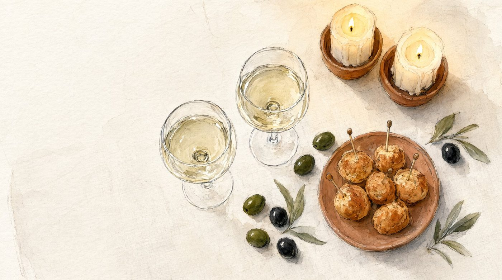
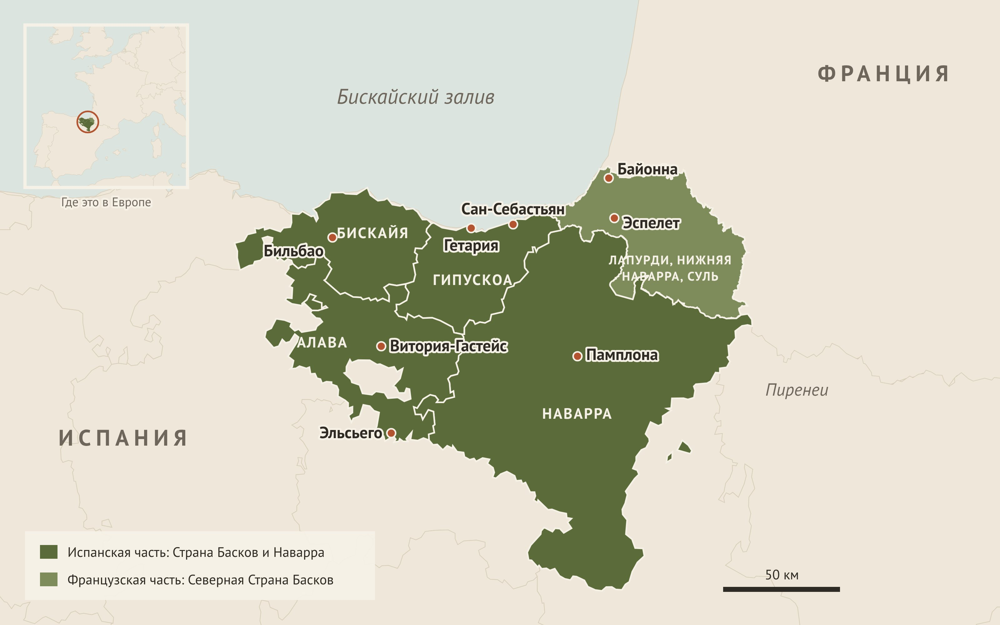
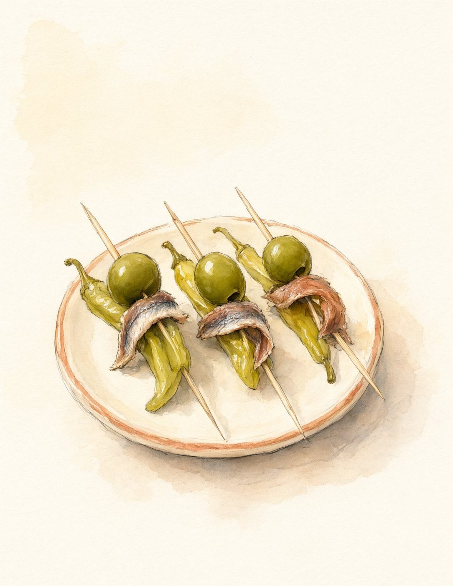
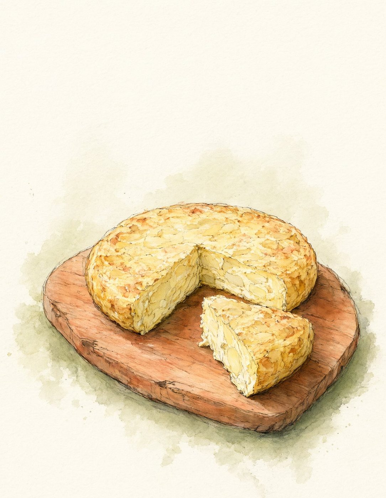
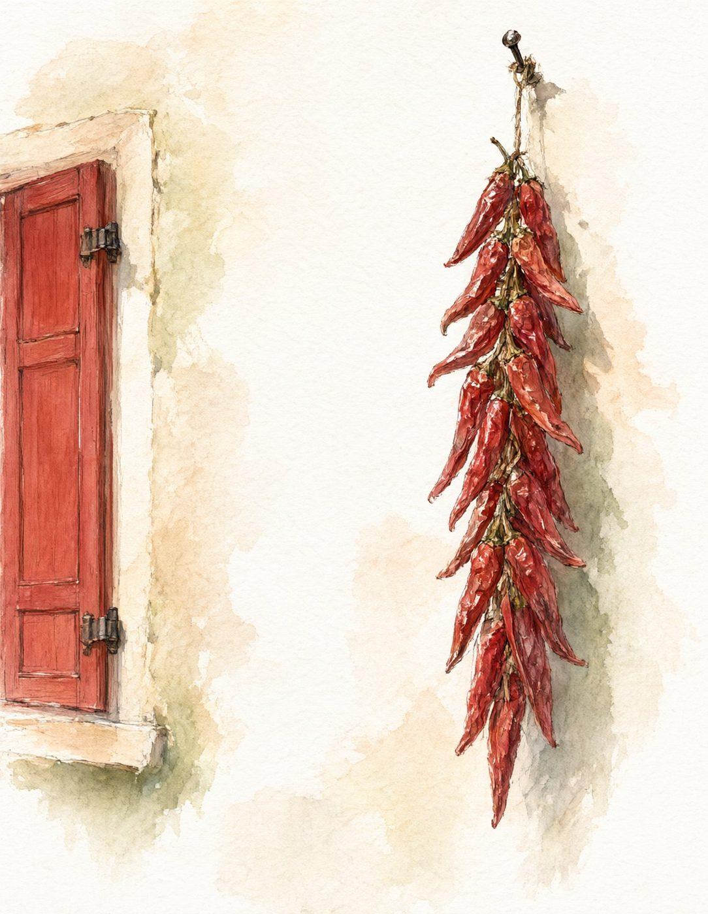
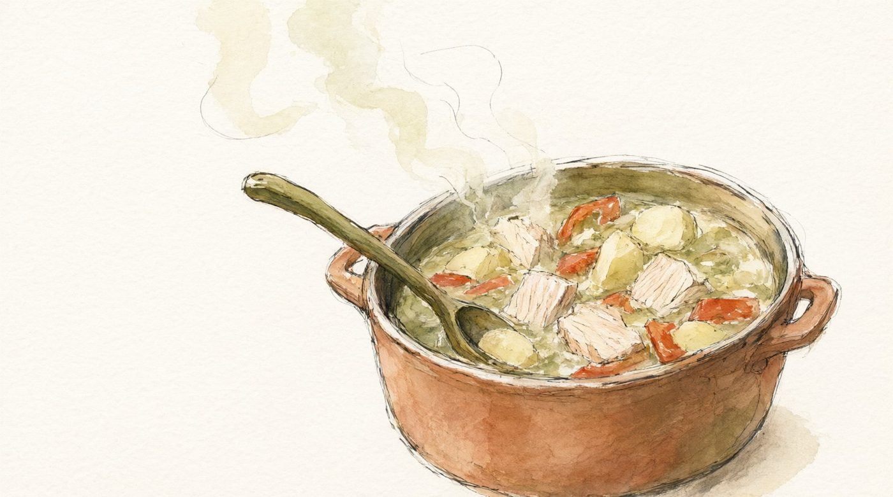
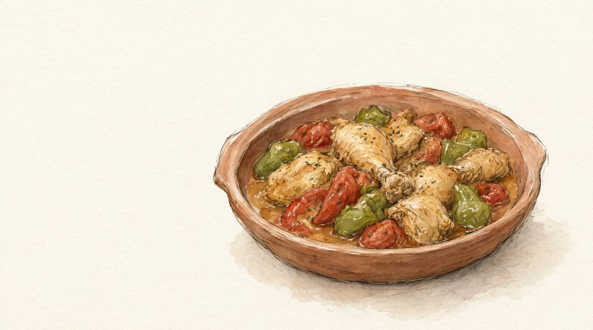
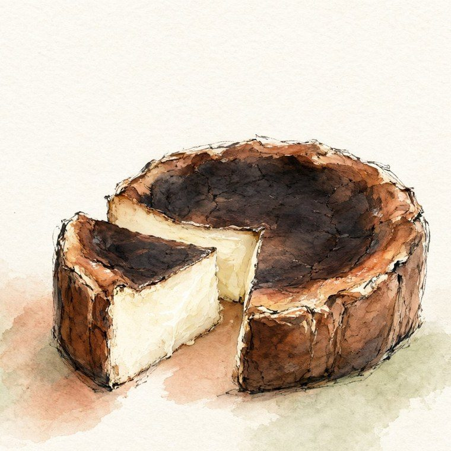
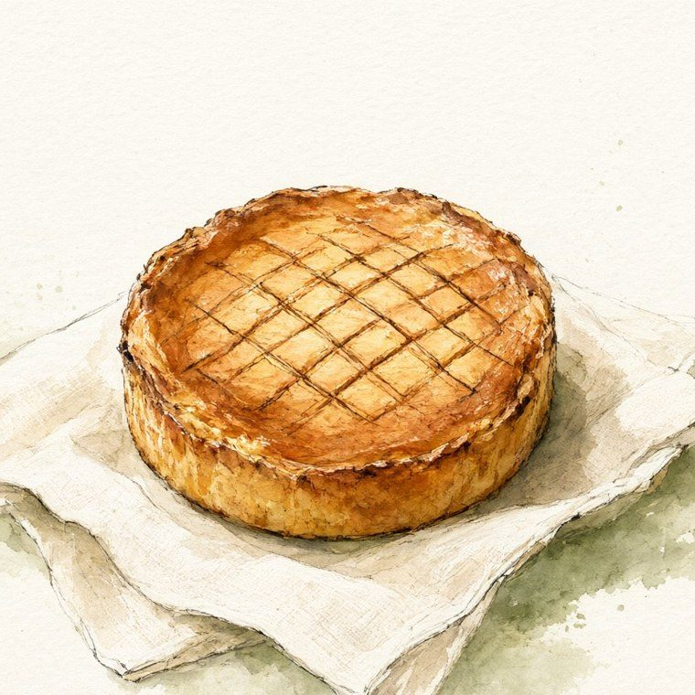

Тематические встречи дома
Есть тема. Зови своих.
Готовые сценарии домашних встреч с друзьями и семьёй. Страна, эпоха, книга или фильм: меню с рецептами, напитки, истории для разговора, музыка и презентация для телевизора. Вы готовите по плану и сидите с гостями, всё остальное уже продумано.

Как это работает
От идеи до встречи за три шага
Выберите тему
Каждый сет посвящён одной теме: стране, эпохе, книге или фильму. Меню, напитки, музыка и истории подобраны под неё, а блюда подходят друг к другу.
Готовьте по плану
Тайминг расписан по часам: что сделать накануне, что за пару часов до гостей. Список покупок сам пересчитается на ваше число гостей.
Зовите своих
Включите презентацию на телевизоре, поставьте музыку и рассказывайте истории из шпаргалки. На столе меню и карточки с викториной.
Что входит в сет
Вся встреча в одном наборе
Меню и рецепты
Пять блюд по ходу вечера и запасные варианты, если кто-то не ест рыбу или нет нужных продуктов.
Список покупок
Укажите, сколько гостей, детей и кто пьёт вино. Список разбит по отделам магазина, купленное можно отмечать.
Тайминг
Что готовить накануне, что в день вечеринки, а что при гостях. Почти всё делается заранее.
Винная карта 18+
Какое вино к какому блюду и почему, запасной вариант и напиток без алкоголя.
Шпаргалка ведущего
Короткие проверенные истории для разговора за столом. Красивые легенды честно подписаны как легенды.
Атмосфера
Музыка по частям вечера, сервировка из того, что есть дома, и план вечера по шагам.
Презентация
Слайды с акварельными рисунками для телевизора и заметки для ведущего к каждому слайду.
Карточки
Меню на стол, именные карточки-домики и викторина «Правда или легенда?» на листах A4.
Дети и аллергены
Что подойдёт детям, чем их занять за столом и таблица аллергенов по каждому блюду.
Первый сет
Баскская вечеринка
Вечер как в Сан-Себастьяне: сначала закуски на шпажках «у стойки» и холодное чаколи, потом рыбацкий котёл за общим столом и жжёный чизкейк из маленького семейного бара.
Страна Басков лежит по обе стороны Пиренеев, в Испании и во Франции. Поэтому в нашем меню соседствуют испанский тунец и французский пирог.

У стойки
гости только пришли
Гильда
Первый пинчо Сан-Себастьяна, около 1946 года. Назван в честь фильма с Ритой Хейворт.

Тортилья де патата
Толстый картофельный омлет. К нему легенда о генерале и документ 1817 года.

Пиперрада
Перцы, томаты и лук на хрустящем хлебе. Готовится накануне.
За столом
одно горячее на выбор
Мармитако
Рагу рыбаков из тунца и картофеля. Его варили прямо в море, в котле marmita.

Курица по-баскски
Курица, которая томится в той же пиперраде. Для тех, кто не ест рыбу.
Десерт
один на выбор
Жжёный чизкейк
Рецепт бара La Viña в Сан-Себастьяне. Корочку специально дают почти сжечь.

Баскский пирог
С заварным кремом и вишней. Его пекли в Камбо-ле-Бене ещё около 1830 года.
к закускам
Чаколи
Лёгкое баскское белое с искрой. Его наливают с высоты вытянутой руки.
к горячему
Риоха Алавеса
Красное из темпранильо с юга баскской провинции Алава.
к десерту
Херес Педро Хименес
Густой сладкий херес с юга Испании. Гостям честно скажем, что он не баскский.
18+ Чрезмерное употребление алкоголя вредит вашему здоровью. Без алкоголя: «мосто», виноградный сок.
Накануне
Чизкейк и пиперрада. Курицу, если выбрали её, можно приготовить целиком.
За пару часов
Тортилья и основа мармитако без тунца. Накрыть на стол.
При гостях
около 25 минутСобрать гильды и довести тунец. Остальное время вы за столом.
Если за столом дети
Детские шпажки вместо гильды: сыр, черри и виноград. Дети собирают их сами, а в конце вечера считают, кто съел больше.
Атмосфера
Баскский аккордеон у стойки, «Txoria txori» за столом и «Agur jaunak» на прощание. Полосатая скатерть и котёл посреди стола.
Откройте сет целиком
Онлайн-версия удобна на телефоне и на кухне: меню по разделам, рецепты по одному и список покупок под ваше число гостей. PDF и карточки можно распечатать.
Попробуйте
Сколько будет гостей?
Так работает список покупок в онлайн-версии сета. Здесь показана только часть: основное меню, все взрослые пьют вино.
В полном сете список длиннее: овощи, бакалея, хлеб, запасные блюда, детские шпажки и отдельный счёт для тех, кто не пьёт вино.
Вопросы
Что обычно спрашивают
Нужно ли хорошо готовить?
Нет. Рецепты написаны для обычной домашней кухни: с граммами, временем и подсказками, что можно заменить. Самые сложные шаги расписаны подробно.
В каком виде я получу сет?
Онлайн-версия с меню по разделам и списком покупок, PDF для печати, презентация для телевизора и карточки для печати на листах A4.
А если у гостей аллергия или кто-то не ест рыбу?
Для горячего и десерта есть по два варианта, у гильды есть вариант без анчоуса. В сете есть таблица аллергенов по каждому блюду.
Где купить продукты и вино?
Всё есть в обычных супермаркетах и винных магазинах в России. Для редких продуктов, вроде перца эспелет, в рецептах указана замена.
Можно позвать гостей с детьми?
Да. Большая часть меню детям подходит, а для них есть свои шпажки и напиток. В списке покупок можно указать, сколько будет детей.
Сколько стоит сет?
Цену объявим к запуску.
Скоро
Следующие темы уже готовятся
Баскская вечеринка открывает серию. Дальше будут другие страны, эпохи, книги и фильмы. И не только ужины: завтраки, обеды и просто встречи с друзьями. Каждый сет устроен так же: меню с запасными блюдами, напитки, истории, музыка, презентация и карточки.
Узнать о запуске
Напишите нам, и мы сообщим, когда сеты появятся в продаже.
Контакт появится здесь